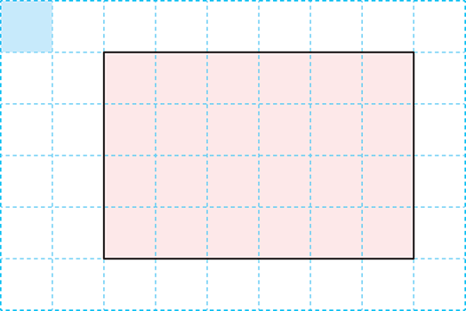
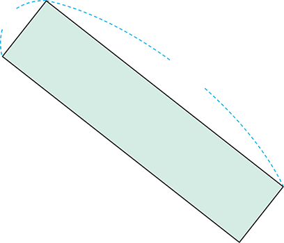
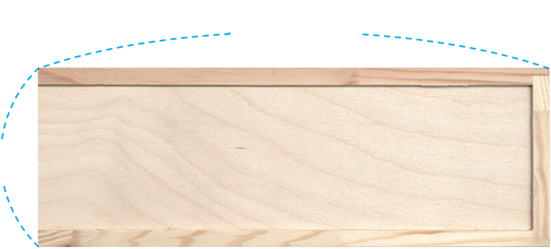
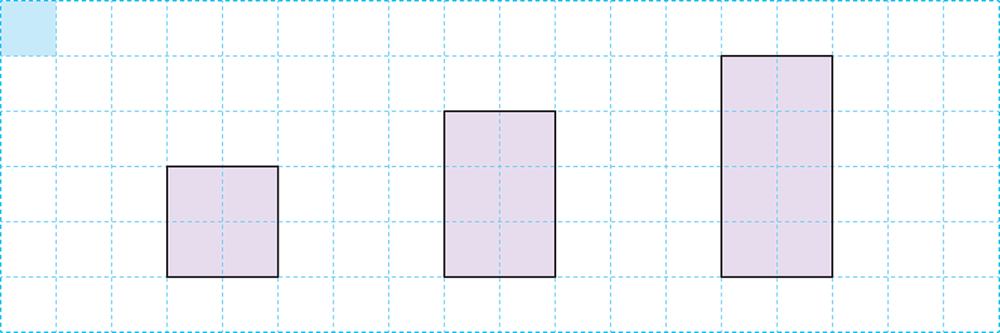
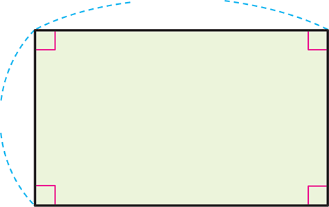

- 1
- 2
- 3
- 4~5
- 4
- 5
- 6
-
1 그림을 보고 안에 알맞은 수를 써넣으세요.
 1 ㎠ -
1 ㎠가 직사각형의 가로에개, 세로에6개 있습니다.4
-
직사각형의 넓이는×6＝4(㎠)입니다.24
-
-
2 직사각형의 넓이를 구해 보세요.
-
 4 ㎝ 17 ㎝ - 식
-
17×4＝68
- 답
-
㎠68
-
10 ㎝ 10 ㎝ - 식
-
10×10＝100
- 답
-
㎠100
-
-
3 슬기가 새로 산 필통 윗면은 가로가 20 ㎝, 세로가 7 ㎝인 직사각형 모양입니다. 이 필통은 윗면의 넓이가 몇 ㎠인가요?
-
 7 ㎝ 20 ㎝ - 식
-
20×7＝140
- 답
-
㎠140
-
-
[4~5] 직사각형을 보고 물음에 답하세요.
 1 ㎠ 첫째둘째셋째 -
4 아래의 표를 완성해 보세요.
직사각형 첫째 둘째 셋째 가로(㎝) 2 22세로(㎝) 2 34넓이(㎠) 468 -
5 위와 같은 규칙에 따라 직사각형을 계속 그렸을 때 옳은 문장에 표 하세요.
-
가로가 계속 같은 직사각형을 그리게 됩니다.
-
세로가 1 ㎝만큼 커지면 넓이도 1 ㎠만큼 커집니다.
-
다섯째 직사각형의 넓이는 12 ㎠입니다.
-
-
6 준기와 연수가 직사각형의 넓이를 구하고 있습니다. 두 친구의 풀이에서 잘못된 곳을 찾아 밑줄을 긋고 바르게 고쳐 보세요.
직사각형의 넓이는
가로×세로를
계산하면 돼 5 ㎝ 3 ㎝ 직사각형의 넓이는
5＋3＋5＋3으로
구하면 돼5×3